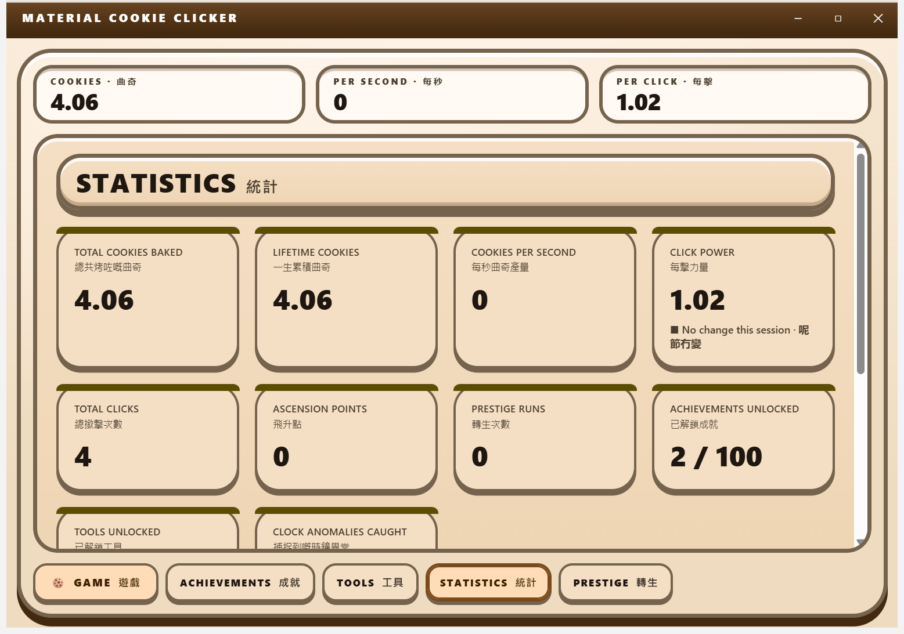

Statistics
The counters the engine actually keeps, including an honest clock-anomaly count.
Shipped the Statistics tab is in this release; counters tracked through the reducer.
From the running application

See all five captures in the capture matrix.
What it does
The game state carries a small, deliberately short list of statistics, each maintained by the one mutation seam that owns all state changes:
- Total clicks — incremented on every click, and read as an unlock condition by achievements and tools.
- Total cookies baked — a big-number lifetime total.
- Clock-anomaly count — how many times a negative or nonsensical wall-clock delta was observed and rejected.
Alongside these, the state exposes the current cookie total, the lifetime total, ascension points and total prestige count, the golden-cookie schedule position, and the timestamps of the last applied tick and the last successful save.
Why a clock-anomaly counter is a statistic
Because the alternative is silence. When the offline calculation rejects a backwards clock it must leave a trace somewhere the player can see, rather than quietly awarding nothing and looking broken. It is a visible number, not a hidden flag.
How it is configured
Nothing here is configurable; statistics are recorded, not tuned. Presentation is fixed by design/stat-tile.html: a raised outer plate with a recessed inner bezel the number sits down inside, a large tabular-numerals counter, a bilingual label, and an optional trend indicator that always pairs colour with a glyph rather than relying on colour alone.
In the shipped build
The Statistics tab is in this release. Two tiles — tools unlocked and clock anomalies caught — sit below the fold in the capture and need scrolling to reach, which is what the capture shows rather than something it hides.